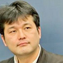

- Organized by
- Computer Entertainment Supplier's Association / Nikkei Business Publications, Inc.
- Cooperation by
- International Game Developers Association Japan Chapter (IDGA Japan)

Screening Committe *Alphabetical Order
Entries will be fairly screened by the Screening Committee.
| GMO Internet Michimoto Tadakuma GMO Social Apps Initiative ProducerProducer, GMO Social Apps Division. Mr. Tadakuma joined GMO Internet in 2004. After sales manager for internet advertising, he was assigned to ”APPLI YAROUZE! project"（joint game development program with GMO）, as a social game development consultant. He performed many great feats,so he was promoted to the producer of ”GMO Social Apps Division" In 2011 |
|
| GREE Shinpei Yashima Group Leader/Contents Director Global Developer Relations Creative & Consulting Group Marketing&Developer Relations Department |
|
|  | IGDA Japan Kiyoshi Shin Vice CoordinatorBorn in 1970, Hiroshima, Japan. Graduated from the Keio University Business and Commerce Faculty and Faculty of Environmental Information. He is Journalist (Video Game / IT). He has weekly column “Kiyoshi Shin’s Analyze Game Industry” in Nikkei.com for 6 years and many articles (Famitsu.com etc). And he is the vice coordinator and the founder of the Japan chapter of International Game Developers Association. He is also the lecturer at Ritsumeikan University College of Image Arts and Science. |
| Joju Games Juan Gril Studio ManagerJuan heads the production at Joju Games. Joju produces online, social and multiplayer games for clients such as Atari, MTV Networks, and Disney. Juan has more than 13 years of experience developing online games. Previously, and as one of the first members of the Yahoo! Games team, Juan was the lead producer for the downloadable games area and community manager of multi player games. In the last year of his tenure at Yahoo!, Juan was the head of Yahoo! Games Studios. Juan is a frequent speaker at industry events. He is the Director of the Innovation Showcase at Casual Connect, an editor of the IGDA Casual Games White Paper, and an Advisor of the Social Games Summit at the Games Developers Conference. Juan holds a BFA in Electronic Media from the University of Illinois. |
|
 |
Microsoft Japan Akihiro Tashiro Group Senior Manager Developer Network Group Interactive Entertainment BusinessMr. Tashiro joined Microsoft in 1997. He offered technial suppport for developers of Xbox 360, Windows, and Windows Phone in Developer Network Group. His coverage areas extends into an investigation of problems and suggestions of solution, and improvement of the performance for Microsoft game platform. Mr. Tashiro is currently the manager of technical section for entertainment fields. |
 |
NHN JAPAN Kazuaki Baba Executive Officer and Senior Manager Game Business Division Smartphone Game Production Department Mr. Baba joined NHN Japan in 2004 as game server programmer. Since he was responsible for Game Development Division and Game Business Division at the company, Mr. Baba is currently assigned as Executive Officer and Senior Manager for Smartphone Game Production Department. He has developed expertise planning and directing in game development. |
| UBM TechWeb Game Network (GDC events, Independent Games Festival, Indie Royale.) Simon CarlessSimon is the EVP of UBM TechWeb’s Game Network, meaning that he manages products such as Game Developers Conference - both the San Francisco mothership and satellite shows in Austin, Germany, China and Canada. He also oversees the double Webby award-winning Gamasutra website and the Maggie award-winning Game Developer magazine, as well as prominent sister sites such as IndieGames.com. Carless is also Chairman Emeritus of the yearly ‘Sundance Festival for games’, the Independent Games Festival, which holds its awards at Game Developers Conference yearly, helping to program the Independent Games Summit and several other summits at the San Francisco show and other shows such as GDC China (IGF China) and GDC Europe (Independent Games Summit). He's also been involved in founding and helping to operate prominent 'indie bundle' website IndieRoyale.com in recent months. |
|
| UBM TechWeb Game Network (Game Developer magazine) Patrick Miller EditorPatrick Miller joined Game Developer magazine as its new editor in early 2012. Prior joining Game Developer, he oversaw games and tech how-to coverage for PCWorld magazine, and freelanced for multiple consumer games publications. |